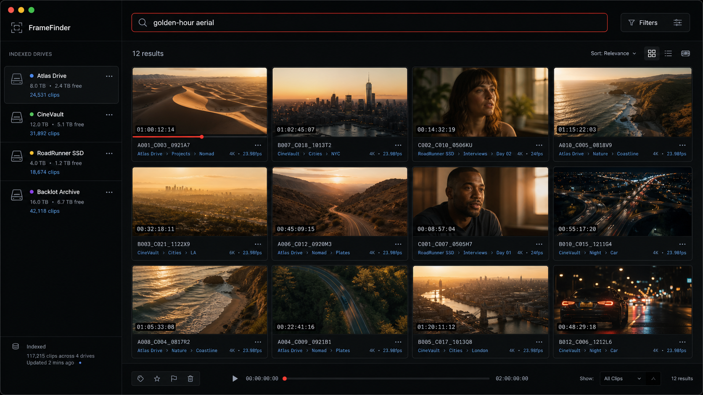
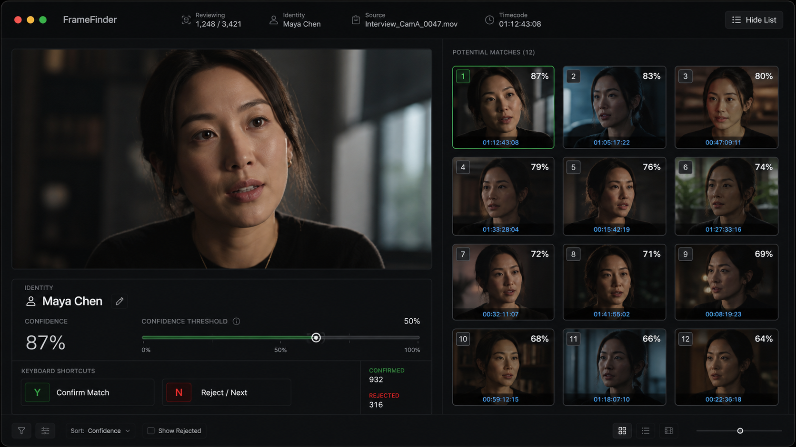

01 / TEXT QUERY12 FOUND
البحث النصي
استخدم اللغة الطبيعية للعثور على الأفعال والمواقع والإضاءة واللحظات.
car in rain at night
Night exteriorATLAS / 00:18:42
97%Wet roadNOVA / 01:04:19
94%ابحث في كل قرص حسب المشهد أو الوجه أو الصورة. تبقى وسائطك حيث تنتمي.

474+اختبار آلي
23+صيغة فيديو
0ملفات وسائط مرفوعة
2لغتان مدمجتان
01 — المشكلة
تيرابايتات من اللقطات. عشرات الأقراص. لقطة واحدة تعرف أنها موجودة. يحوّل FrameFinder الذاكرة البصرية لأرشيفك إلى شيء يمكنك البحث فيه فعلًا.
02 — بحث ذكي
صِف لحظة. أسقط صورة مرجعية. يبحث FrameFinder في كل قرص مفهرس — حتى تلك الموجودة على الرف.
استكشف البحث الذكي ↗استخدم اللغة الطبيعية للعثور على الأفعال والمواقع والإضاءة واللحظات.
car in rain at night
Night exteriorATLAS / 00:18:42
97%Wet roadNOVA / 01:04:19
94%أسقط لقطة وابحث عن لقطات مشابهة بصريًا في أرشيفك.
لا يوجد اتصال؟ ابحث محليًا في الوسوم المخزّنة أثناء انتظار الفهرسة.
 LOCAL
LOCAL03 — كيف يعمل
FRAMEFINDER / ATLAS
USB أو Thunderbolt أو SD. يكتشفه FrameFinder، يسمّيه، وينشئ ملصقًا قابلًا للمسح الضوئي.
SCENECOAST / SUNSET
LIGHTGOLDEN HOUR
VECTOR1536 DIM
المشاهد والوجوه والإضاءة والوقت من اليوم ونوع التصوير تعود كمتجهات ووسوم قابلة للبحث.
car in the rain at night
12 MATCHESCAR_A_0142.MOVATLAS / 00:18:42
97%COAST_B_0831.R3DNOVA / 01:04:19
94%INT_C_0098.BRAWATLAS / 00:07:11
91%تظهر النتائج فورًا عبر كل قرص مفهرس، سواء كان متصلًا أو موضوعًا على الرف.
04 — التعرف على الوجوه
أكّد أو ارفض تطابقًا بمفتاح واحد. اضبط عتبة الثقة. يصبح FrameFinder أكثر دقة مع طاقمك وعملائك وفريقك.

05 — مصمَّم للقطات
نظام أرشفة مصمَّم لمحترفي الفيديو العاملين، وليس مكتبة سحابية أخرى.
صفِّ حسب الإضاءة، الوقت من اليوم، نوع التصوير، الوسوم، والملاحظات.
فهرسة كاملة لصيغتَي BRAW وR3D، إضافة إلى MOV وMXF وMKV وMTS وWebM والمزيد.
ATLAS8 TB · USB-C
76%NOVA4 TB · TB4
100%FIELD_072 TB · SDXC
42%18.6 TB
SEARCHABLE
حالات اتصال فورية، إدارة أقراص متعددة، فهرسة في الخلفية، وملصقات QR من نوع A6.
06 — المحلي أولًا
تعمل المطابقة والبحث على جهاز Mac الخاص بك. تنتقل فقط لقطات رئيسية مؤقتة للتحليل، ثم تعود كمتجهات ووسوم. يبقى أرشيفك ملكك.
/Volumes/Atlas_08TB
المتجهات، الوسوم، الوجوه، والبيانات الوصفية تعيش على جهاز Mac الخاص بك.
golden-hour aerial
↵07 — الأسعار
ابدأ بقرص واحد. انتقل للأعلى عندما ينمو أرشيفك. أسعار الإطلاق النهائية قابلة للتأكيد.
مجاني
لتجربة FrameFinder على أرشيف محدود.
ابدأ مجانًا ↗احترافي — موصى به
لصنّاع الأفلام المستقلين والمحررين والمبدعين.
انضم للوصول المبكر ↗مؤسسات
للاستوديوهات ودور ما بعد الإنتاج والفرق.
تواصل معنا ↗08 — على خارطة الطريق
مخطَّط له
مخطَّط له
مخطَّط له
مخطَّط له
مخطَّط له
09 — الأسئلة الشائعة
الأسئلة التي يطرحها صنّاع الأفلام قبل تسليم التطبيق أرشيفهم.
لا. تبقى وسائطك على أقراصك. تُعالَج اللقطات الرئيسية لاستخراج المتجهات والوسوم، لكن لقطاتك لا تُخزَّن أبدًا من قِبل الخدمة.
نعم. يحتفظ الفهرس المحلي باللقطات الرئيسية والبيانات الوصفية القابلة للبحث لكل قرص تمت فهرسته، متصلًا كان أو لا.
لا. يعمل استدلال الذكاء الاصطناعي على خدمة FrameFinder، ويأتي FFmpeg مضمَّنًا مع التطبيق.
macOS 13 Ventura أو أحدث، على كل من Apple Silicon وIntel. يُنصح باستخدام Apple Silicon مع 16 جيجابايت من الرام.

تطبيق macOS عام. Apple Silicon + Intel.
ليس هذا جهاز Mac المناسب؟ تنزيل لـ Apple Silicon